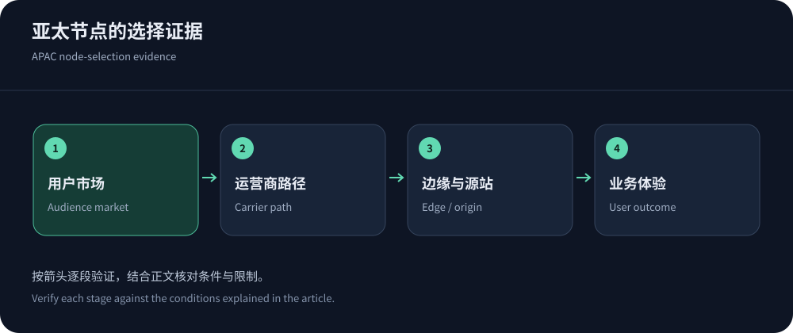
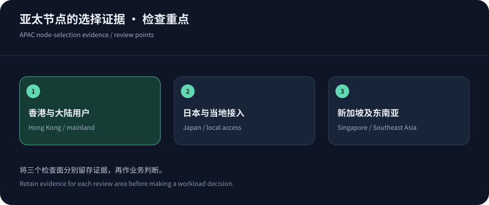

One regional average cannot describe Asia-Pacific
Hong Kong, Japan, Singapore and Southeast Asian users traverse different interconnects and access networks. Geographic proximity does not guarantee a shorter path. Use cities and carriers, not a few datacenter averages.
Map real audiences and workflows. This guide uses public information checked on 14 October 2026, not rankings. Consider CDN5 for relevant regional-security needs while verifying actual service regions.
Treat each city as a candidate, not an answer
Hong Kong, Japan and Singapore are useful candidates for relevant audiences, not guaranteed quality conclusions. Interconnection can make a more distant serving location practical; judge by actual HTTP and business outcomes.
Regional names do not locate origins. Record edge, cache and application placement separately, verifying scheduling controls and actual processing-location commitments.


Use a market worksheet instead of a node map
Record business share, access networks, devices, content and origin dependencies by market. Mark sparse evidence rather than substituting another region. Derive deployment from this worksheet.
| Audience market | Observe | Deployment decision |
|---|---|---|
| Mainland audiences | Segment carriers/cities/peaks and cross-border failures. | Validate offshore paths; mainland-node eligibility is separate. |
| Japanese audiences | Local fixed/mobile access and edge versus origin paths. | Verify local delivery eligibility and steering trade-offs. |
| Singapore and nearby markets | Cross-border access, origins, transactions and dependencies. | Singapore is a candidate, not evidence for every neighboring market. |
| Multiple Southeast Asian markets | Country/carrier/mobile/device segments, including weak networks. | Consider regional distribution and content optimization. |
Dynamic origins can change the decision
Hits emphasize audience-to-edge delivery, while dynamic work adds origins, databases and payments. A Singapore edge does not relocate European writes. Map interactions and cross-region waits before choosing origin, connection or cache changes.
Cross-region writes need idempotency and status checks after timeouts, which do not prove nonexecution. Measure correct outcomes, not merely API speed or fast errors.
Keep language and cache semantics consistent
Apply RFC 9111 to language, currency and regional variation. Stable public language paths help, while personalized prices and identities need isolation.
Use CloudFront key guidance, publish assets before references and purge selectively. Global purges can cause simultaneous regional refill.
Global steering and regional control have trade-offs
Global steering may not permit city pinning; regional control can disadvantage other audiences. Choose according to users, data requirements, observability and cost. Azure Front Door architecture illustrates global ingress, not arbitrary location guarantees.
Revisit scope as markets grow. Distinguish audience, serving and storage regions, verifying contractual controls for residency requirements.
Separate regional billing from node eligibility
Google CDN pricing lists $0.09/GiB for the first APAC delivery tier including Hong Kong, plus other components. Mainland-destination pricing explicitly uses offshore serving locations; it does not prove mainland nodes.
Cloudflare China Network has separate product/domain requirements. Review geography and eligibility before migration, retaining other applicable business/data obligations.


Validate and expand with traceable decisions
Test public, dynamic and persistent workflows per core market, recording protocol, cache, reuse, errors and task completion. Do not equate an unrelated test endpoint with production. Include peaks and failed weak-network samples.
Roll out narrowly with protected fallback, then review language, policy, cost and support. See APAC comparison and Hong Kong origin optimization.
Update the market worksheet with each launch and confirm priorities with business owners.